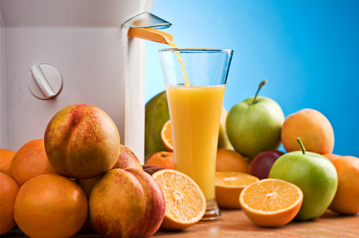

11 Reasons Why Juicing is Amazing for You
We've harped on about the spiritual ways in which juicing can change your life. We've also taught you how to make vegetable juice at home, and how to keep the beet juice rocking.

Now it's time to look at the practical reasons why juicing will impact your life in an amazing way.
This is a guest post by John McIntyre.
LIQUID ENGINEERING FOR YOUR BODY.
The life-giving juice found in fresh fruits and vegetables is nutritionally way beyond anything humans can manufacture. I'm not just talking about junk food, but anything from bread to bottled juice.
Unfortunately, 95% of what you find on supermarket shelves is practically devoid of any nutritional value. The various methods we use to process our food are robbing it of its benefits.
This is why juicing is so wonderful. You can take the nutritional power from as many different fruits and vegetables as you want and feed it directly into your body. This truly is liquid engineering.
BOOST YOUR ENERGY.
Think of the tired feeling you get after a heavily-processed meal. That happens because your body has to redirect energy to your digestive system not something you really want. And who wants to eat food that makes them tired anyway? We eat and drink because we're trying to replenish energy, not spend it.
Enter juicing. One of my favorite things about it is that you are doing the body's digestive work for it. No more feeling sleepy after a meal. Now you get a burst of energy and your body will thank you for it.
SLEEP BETTER.
When you sleep, your body is recharging itself. Before processed food was invented, this was no problem.
But in today's world of nutritionally bankcrupt food, this doesn't happen like it's meant to. Rather than recharging, the body has to focus on digestion and squeezing whatever vitamins it can find out.
By juicing (and by eating raw food in general) you hand the power of sleep back over to your body. Rather than digesting food, your body can get back to sleeping which means a smoother and more restful night.
WAKE UP EARLY.
It goes without saying that if you don't sleep well, you're not going to get up early. So as you feed your body with more life-giving juice, you'll wake up earlier with more energy for the day.
FEEL GREAT.
If you've experienced how good you feel when you eat good food, then you won't need any convincing here. Simply put, the better you eat (and drink), the better you feel.
LOOK FANTASTIC.
When you feel great, you look great.
LOSE WEIGHT.
Much of what causes weight gain is found in unnatural and highly-processed foods that don't have any nutritional value.
When you juice and your body is filled to the brim with powerful nutrients, all of its natural processes will step up a notch. Yes, this means your metabolism, digestion and immune system will function much more effectively.
Don't forget all the extra energy you are going to have to get rid of somehow. That "somehow" is best known as exercise the movement that produces endorphins and makes you happy.
EAT LESS.
When you are eating food which is rich in nutrients, your body isn't going to need as much to be satisfied.
PREVENT CANCER.
Fruit and vegetables are essentially warehouses of antioxidants. These babies make up the army inside you which fights cancer. They eliminate cancerous growths and make sure your body is in tip-top shape.
Sure, you can get antioxidants from eating carrots. But think of how much faster it'll be if you drink them.
GET MORE DONE.
More energy is naturally going to mean that you get more done. Whether you go surfing, paint a picture or write a business plan, it doesn't matter. The point is that you'll be doing more of what you want to do which can only be a good thing.
ENJOY LIFE.
An old arabic proverb says "He who has health has hope; and he who has hope has everything."
I can't really think of a better way to put it. The healthier you are, the more you are going to enjoy life.
Credits to : realfoodswitch
[Blogs on update...]

Lets Talk!
Have a recipes and blogs in mind? Don't be afraid to get in touch!